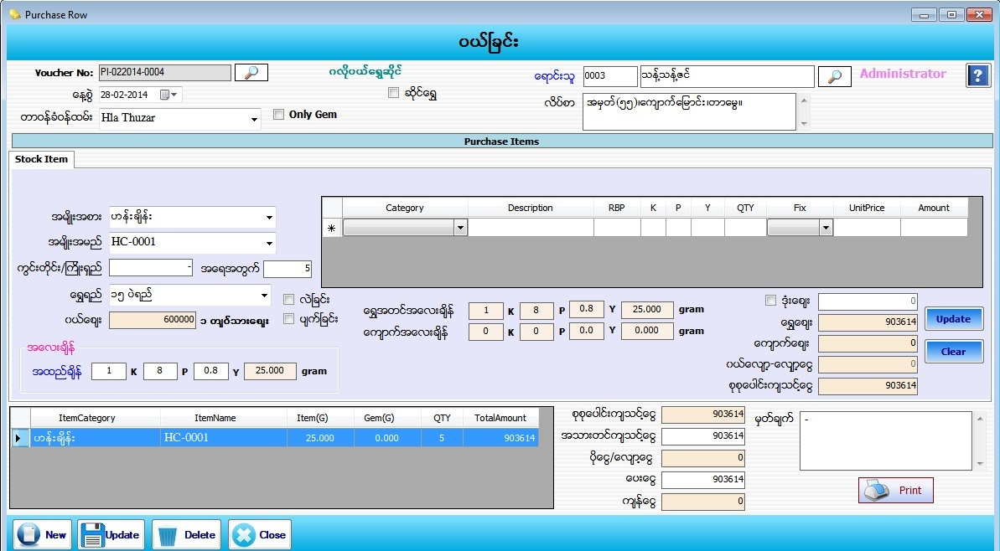

Purchase Row Setup
PurchaseRaw
PurchaseRaw(GoldShop)
PurchaseRaw(Gems)

- Transaction ေအာက္ရွိ Purchase Raw Material Item Form ကိုဖြင့္ပါ။
- Purchase Raw Material Item တြင္ သံုးမ်ိဳးရွိပါသည္။ Purchase Stock Item, Pruchase Only Gem ႏွင့္ ဆိုင္ေရႊျပန္ဝယ္ျခင္း တို႕ျဖစ္ျပီး Form စစဖြင့္ျခင္းတြင္ Purchase Stock Item အတြက္ Form စတင္ေတြ႕ ရမည္ျဖစ္သည္။
- Purchase Stock Item ျဖစ္သည့္အတြက္ Only Gem ႏွင့္ ဆိုင္ေရႊတို႕တြင္ အမွန္ျခစ္ျခစ္ ထားစရာမလိုပါ။
- Voucher No သည္ software မွ Auto တပ္ေပးပါမည္။
- ေန႕စြဲတြင္ လက္ရွိေရာက္ေနေသာ Date ကိုျပေပးမည္ ျဖစ္သည္။
- တာဝန္ခံ ဝန္ထမ္းကို ေရြးခ်ယ္ပါ။ ေရာင္းသူ၏ code နံပါတ္ကိုအလြတ္သိပါကရိုက္ထည့္လွ်င္ ေရာင္းသူအမည္ႏွင့္ လိပ္စာက်လာပါမည္။နံပါတ္ကိုအလြတ္မသိရွိပါကေရာင္းသူေဘးတြင္ရွိေသာမွန္ဘီလူးကိုႏွိပ္ၿပီး ေရြးခ်ယ္ရပါမည္။
- အမ်ိဳးအစား၊ အမ်ိဳးအမည္၊ ကြင္းတိုင္းႀကိဳးရွည္၊ အေရအတြက္၊ ေရႊရည္ စသည္ျဖင္ လိုအပ္သည္မ်ားကို ျဖည့္စြက္ပါ။ ေရႊရည္တြင္ က်ပ္သားခ်ိန္ကို ေရြးထားပါက အထည္ခ်ိန္ သတ္မွတ္ရာတြင္ K/P/Y ကိုသာရိုက္ထည့္ႏိုင္မည္ျဖစ္ျပီး Gram ခ်ိန္ေရြးထားပါက gram အေလးခ်ိန္ ကိုသာ ရိုက္ထည့္ ႏိုင္မည္ျဖစ္သည္။
- ေရြးခ်ယ္လိုက္ေသာေရႊရည္ေပၚမူတည္ၿပီး ဝယ္ေစ်းက်လာပါမည္။ထိုဝယ္ေစ်းသည္ ေစ်းသတ္မွတ္ၿခင္း (Master Setup -> Current Price) တြင္သတ္မွတ္ခဲ့ေသာေစ်းမ်ားထဲမွ ေနာက္ဆံုးေန႔စဲြအခ်ိန္၏ ဝယ္ေစ်းကိုၿပေပး ၿခင္းၿဖစ္ပါသည္။ လဲေစ်းကိုအမွန္ၿခစ္လွ်င္ ေစ်းသတ္မွတ္ၿခင္းတြင္သတ္မွတ္ခဲ့ေသာ လဲေစ်းႏွဳန္း(သို႔)ရာခိုင္ႏွဳန္းက် လာပါမည္။ ပ်က္ေစ်းကိုအမွန္ၿခစ္လွ်င္ ေစ်းသတ္မွတ္ၿခင္းတြင္သတ္မွတ္ခဲ့ေသာ ရာခိုင္ႏွဳန္းက်လာပါမည္။ ဝယ္ေစ်း၊လဲေစ်း၊ပ်က္ေစ်း တို႔ကို ရာခိုင္ႏွဳန္းမ်ားသတ္မွတ္ထားခဲ့လွ်င္ ေပါက္ေစ်း(ေရာင္းေစ်း)ကို ေရႊခ်ိန္ၿဖင့္ေစ်း တြက္ၿပီး သတ္မွတ္ထားေသာရာခိုင္ႏွဳန္းကိုေလ်ာ့လိုက္မည္ၿဖစ္ပါသည္။
- ေက်ာက္ပါေသာ အထည္ျဖစ္ပါက ဇယားကြက္ထဲတြင္ ၿဖည့္စြက္မည္မ်ားႏွင့္တြက္ခ်က္ေပးမည့္အပိုင္းမ်ားသည္ Item to Sales တြင္ေၿပာထားသည့္အတိုင္းလုပ္ေဆာင္ရပါမည္။ အထည္ခ်ိန္မွ ေက်ာက္အေလးခ်ိန္ကို ႏွဳတ္လိုက္ပါက ေရႊ အတင္အေလးခ်ိန္ကို Auto ျပေပးပါလိမ့္မည္။
- ဒံုးေစ်း ကိုသတ္မွတ္လိုပါက check box တြင္ အမွန္ျခစ္လိုက္လွ်င္ထိုအထည္တစ္ခုကို ဒံုးေစ်းတစ္ခုၿဖင့္ ေစ်းၿဖတ္ ဝယ္လိုက္ၿခင္းၿဖစ္ပါသည္။
- ဒံုးေစ်းမဟုတ္ပါက ေရႊအတင္အေလးခ်ိန္ကိုဝယ္ေစ်းႏွင့္ေၿမွာက္ၿပီးတန္ဖိုးကို ေရႊေစ်းတြင္ေတြ႔ႏိုင္ပါသည္။
- ေက်ာက္ပါရွိပါက ေက်ာက္ေစ်းတြင္စုစုေပါင္းေက်ာက္၏တန္ဖိုးကို ေက်ာက္ေစ်းတြင္ေတြ႔ႏိုင္ပါသည္။
- ထုိ႕ေနာက္ Add Buttonႏွိပ္ျပီး Dataမ်ားျဖည္႕သြင္းေပးရမည္။
- Add လုပ္ျပီးသား ပစၥည္းတစ္ခုအားျပန္လည္ျပင္ဆင္လုိပါက ေအာက္မွ Grid မွ မိမိျပင္ဆင္လုိေသာ Row ၏ ေရွ႕ဆံုးကိုနွိပ္ပါက သက္ဆိုင္ရာ Row ၏ Data မ်ားကို အေပၚတြင္ျပန္လည္ျပင္ဆင္နုိင္မည္ျဖစ္သည္။ျပီးေနာက္ Update Button အားနွိပ္ပါ။
- အသားတင္က်သင့္ေငြ၊ ေပးေငြ၊ မွတ္ခ်က္ တြင္ ျဖည့္စြက္ပါ။ စုစုေပါင္းက်သင့္ေငြ၊ ပိုေငြ-ေလွ်ာ့ေငြ၊ က်န္ေငြ တို႕တြင္ Software မွ Auto က်ေပးမည္ ျဖစ္သည္။
- Data မ်ားျဖည့္စြက္ျပီးပါက Save Button ကိုႏွိပ္၍ သိမ္းဆည္းႏိုင္ပါသည္။ Purchase Invoice Voucher ထုတ္လိုလွ်င္ Print Button ကိုႏွိပ္၍ Voucher ထုတ္ႏုိင္ပါသည္။
- သိမ္းဆည္းၿပီးသား Data မ်ားအား ၿပန္လည္ၾကည့္ၿခင္း၊ ၿပင္ဆင္ၿခင္းမ်ားၿပဳလုပ္ခ်င္ပါက Voucher No ၏ ေဘးတြင္ ရွိေသာ မွန္ဘီလူး button ကိုႏိွပ္ၿပီးၿပန္လည္ၾကည့္ရွဳၿပင္ဆင္ခ်င္ေသာ Purchase Item အား ေရြးခ်ယ္ ၿပီးၿပင္ႏိုင္ ပါသည္။
- သိမ္းဆည္းၿပီးသား ထည့္ျပီးသား Data မ်ားကို ဖ်က္လိုလွ်င္ မွန္ဘီလူး button အားႏိွပ္ၿပီးရွာပါ။ ထို႕ေနာက္ မိမိဖ်က္္လိုေသာ Data ကို Delete Button ကိုႏွိပ္၍ ဖ်က္ႏိုင္ပါသည္။
- Purchase Item အသစ္ထည္႕လိုပါက New Button ကိုႏွိပ္ျပီး အသစ္ထည့္ႏိုင္ပါသည္။
- Purchase Raw Material Item Form အား အသံုးျပဳျပီးပါက Close Button ကိုႏွိပ္၍ ပိတ္ႏိုင္ပါသည္။